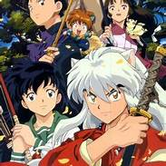

Inuyasha (犬夜叉, lit. "Dog Yaksha") is a Japanese manga series written and illustrated by Rumiko Takahashi. It was serialized in Shogakukan's shōnen manga magazine Weekly Shōnen Sunday from November 1996 to June 2008, with its chapters collected in fifty-six tankōbon volumes.
The series begins with Kagome Higurashi, a fifteen-year-old middle school girl from modern-day Tokyo who is transported to the Sengoku period after falling into a well in her family shrine, where she meets the half-dog demon, half-human Inuyasha. After the sacred Shikon Jewel re-emerges from deep inside Kagome's body, she accidentally shatters it into dozens of fragments that scatter across Japan. Inuyasha and Kagome set to recover the Jewel's fragments, and through their quest they are joined by the lecherous monk Miroku, the demon slayer Sango, and the fox demon Shippō. Together, they journey to restore the Shikon Jewel before it falls into the hands of the evil half-demon Naraku.
This is a anime TV seariec!
In contrast to the typically comedic nature of much of Takahashi's previous work, Inuyasha deals with a darker and more serious subject matter, using the setting of the Sengoku period to easily display the violent content while still retaining some comedic elements.
